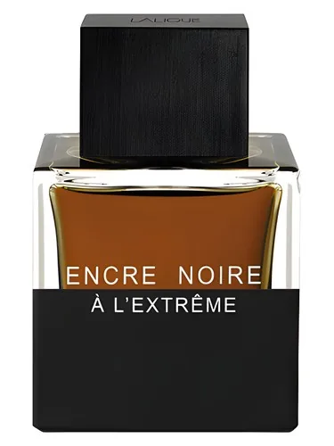

Encre Noire à l'Extrême
- Para hombre
- Familia amaderada
- Lanzado en 2015
- Ideal para otoño y invierno
Con caja$1,750Te lo conseguimos en 2 días a 1 semanaSin caja$750Te lo conseguimos en 2 días a 1 semana
No disponible: te lo conseguimos en 2 días a 1 semana
Cómo huele
Amaderado
Aromático
Ámbar
Balsámico
Especiado cálido
Sus notas
Salida
ciprésresina de elemíbergamota
Corazón
vetiver haitianovetiverinciensoraíz de iris
Fondo
benjuísándalopachulí
Encre Noire à l'Extrême de Lalique es un perfume amaderado para hombre, lanzado en 2015. Abre con ciprés y resina de elemí, en el corazón tiene vetiver haitiano y vetiver y deja un fondo de benjuí y sándalo. Lo que más se siente: amaderado, aromático y ámbar.